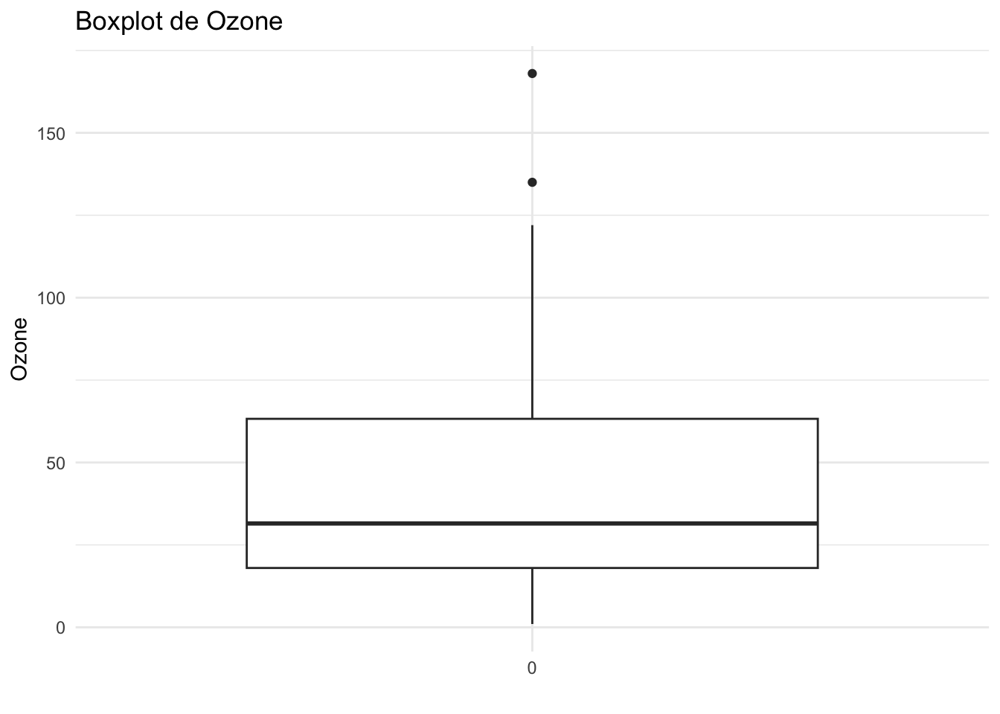
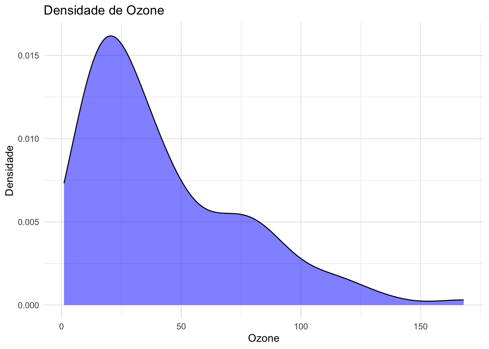
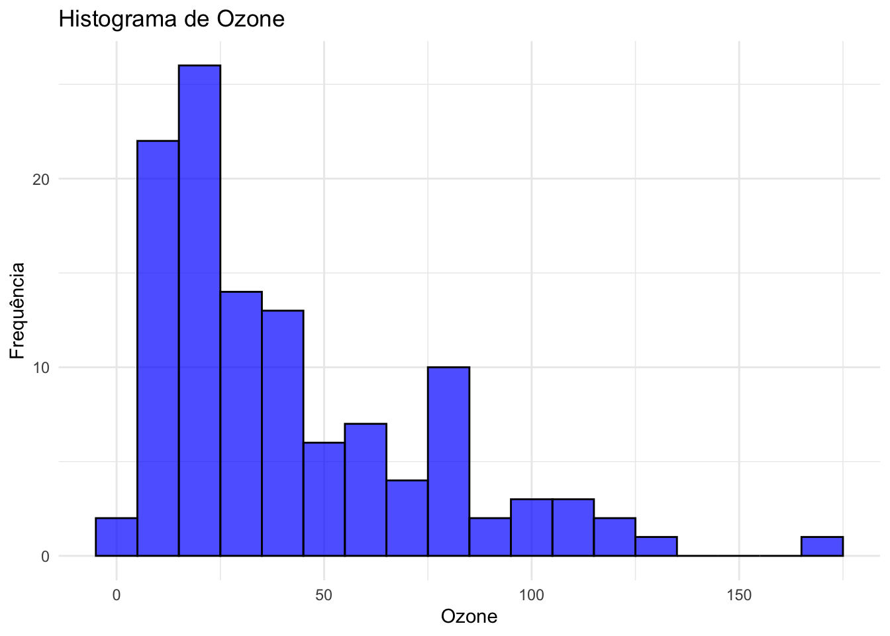
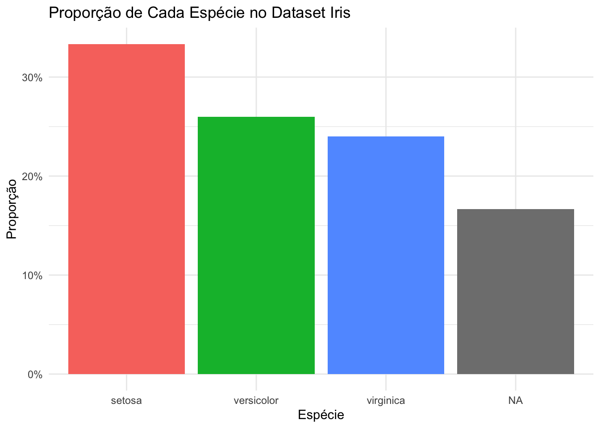

# Carregando os pacotes necessários
library(dplyr) # Manipulação de dados
library(ggplot2) # Visualização de dados
library(janitor) # Limpeza e resumo dos dados
library(lubridate) # Manipulação de datas
library(naniar) # Visualização de dados faltantes
library(stringr) # Manipulação de textos
library(tidyr) # Para transformar os dados3 Qualidade de Dados
A qualidade dos dados é um pilar fundamental em qualquer projeto de ciência de dados. Dados de baixa qualidade podem comprometer a integridade das análises e levar a decisões equivocadas. Portanto, garantir a qualidade dos dados deve ser um processo contínuo e sistemático em qualquer projeto de data science. Este capítulo apresenta uma abordagem prática para avaliar e melhorar a qualidade dos dados, dividindo a análise por tipo de variável: categórica, numérica, textual e temporal.
3.1 Abordagem Estruturada para Análise de Qualidade de Dados
A análise de qualidade de dados é estruturada de acordo com os tipos de variáveis, cada uma exigindo técnicas específicas para garantir a integridade e a confiabilidade dos dados:
Variáveis Numéricas: A análise de dados numéricos foca em calcular estatísticas descritivas, como média, mediana, desvio padrão, mínimo e máximo, para entender a distribuição dos dados. Além disso, a identificação de outliers e a análise de distribuição são cruciais para garantir que os modelos preditivos não sejam influenciados por valores extremos.
Variáveis Categóricas: Para dados categóricos, a ênfase está no balanceamento de classes e na frequência das categorias. Um bom balanceamento de classes é essencial para garantir que os modelos de aprendizado de máquina não sejam tendenciosos. Além disso, é importante verificar o percentual de dados ausentes, pois a falta de dados categóricos pode distorcer a análise.
Dados Temporais: A análise de dados temporais envolve a verificação de formatos, intervalos e dados faltantes. Dados temporais são frequentemente utilizados para análises de séries temporais e previsões, e a qualidade desses dados é crucial para a precisão das análises.
Dados Textuais: A análise de dados textuais envolve verificar o comprimento dos textos, a diversidade de valores e o percentual de campos ausentes. Dados textuais são frequentemente utilizados para análises qualitativas e sentimentais, e a qualidade desses dados pode impactar significativamente os resultados.
3.2 Tópicos Importantes
Vários tópicos são fundamentais para a análise de qualidade de dados:
Identificação de Dados Ausentes ou Nulos: Detectar e tratar dados ausentes é essencial para evitar que análises sejam comprometidas por falta de informações.
Detecção de Valores Atípicos: Outliers podem distorcer análises e modelos, e sua identificação é crucial para garantir a precisão dos resultados.
Verificação de Consistência e Integridade: Garantir que os dados sejam consistentes e íntegros é fundamental para a confiabilidade das análises.
Identificação de Duplicatas: Dados duplicados podem inflar artificialmente os resultados e devem ser identificados e tratados adequadamente.
Garantir a qualidade dos dados é um processo contínuo e essencial para o sucesso de qualquer projeto de ciência de dados. Ao dividir a análise por tipo de variável e aplicar técnicas específicas para cada uma, podemos melhorar significativamente a integridade e a confiabilidade dos dados, resultando em análises mais precisas e decisões mais informadas.
3.3 Pacotes que vamos utilizar
Para realizar as análises de qualidade de dados, utilizaremos os seguintes pacotes no R, que oferecem ferramentas poderosas para manipulação, visualização e limpeza de dados:
3.4 Qualidade de Dados Numéricos
Para dados numéricos, calcular estatísticas descritivas como média, mediana, desvio padrão, mínimo e máximo é fundamental para entender a distribuição dos dados. Além disso, verificar o percentual de dados ausentes ajuda a identificar problemas que podem afetar a análise. Dados numéricos de baixa qualidade podem levar a modelos preditivos imprecisos.
# Carregando o dataset 'airquality'
data("airquality")
# Calculando as estatísticas descritivas e percentual de dados faltantes
stats <- airquality |>
dplyr::select(-c("Month", "Day")) |> # Retiradas variáveis que,
# apesar de numéricas, sua análise deve ser feita como categoria.
dplyr::summarise(
dplyr::across(
dplyr::where(is.numeric),
list(
mean = ~mean(., na.rm = TRUE),
median = ~median(., na.rm = TRUE),
sd = ~sd(., na.rm = TRUE),
min = ~min(., na.rm = TRUE),
max = ~max(., na.rm = TRUE),
na_percentage = ~sum(is.na(.)) / n() * 100
),
.names = "{.col}-{.fn}" # Usando hífen como separador
)
) |>
tidyr::pivot_longer(
cols = everything(),
names_to = c("Variable", ".value"),
names_sep = "-" # Alinhando o separador com o usado acima
)
# Exibindo as estatísticas descritivas
stats# A tibble: 4 × 7
Variable mean median sd min max na_percentage
<chr> <dbl> <dbl> <dbl> <dbl> <dbl> <dbl>
1 Ozone 42.1 31.5 33.0 1 168 24.2
2 Solar.R 186. 205 90.1 7 334 4.58
3 Wind 9.96 9.7 3.52 1.7 20.7 0
4 Temp 77.9 79 9.47 56 97 0 3.4.1 Visualização de Dados Numéricos
Visualizar dados numéricos é essencial para entender suas distribuições e identificar possíveis outliers. Aqui, apresentamos três tipos de gráficos: boxplot, densidade e histograma, aplicados ao dataset airquality.
# Boxplot para Ozone, Solar.R e Wind
ggplot(airquality, aes(x = factor(0), y = Ozone)) +
geom_boxplot() +
labs(title = "Boxplot de Ozone", x = "", y = "Ozone") +
theme_minimal()Warning: Removed 37 rows containing non-finite outside the scale range
(`stat_boxplot()`).
# Densidade para Ozone, Solar.R e Wind
ggplot(airquality, aes(x = Ozone)) +
geom_density(fill = "blue", alpha = 0.5) +
labs(title = "Densidade de Ozone", x = "Ozone", y = "Densidade") +
theme_minimal()Warning: Removed 37 rows containing non-finite outside the scale range
(`stat_density()`).
# Histograma para Ozone, Solar.R e Wind
ggplot(airquality, aes(x = Ozone)) +
geom_histogram(binwidth = 10, fill = "blue", color = "black", alpha = 0.7) +
labs(title = "Histograma de Ozone", x = "Ozone", y = "Frequência") +
theme_minimal()Warning: Removed 37 rows containing non-finite outside the scale range
(`stat_bin()`).
3.5 Qualidade de Dados Categóricos
A análise de dados categóricos é crucial para entender a distribuição das classes e identificar possíveis desequilíbrios. Um bom balanceamento de classes é essencial para garantir que os modelos de aprendizado de máquina não sejam tendenciosos. Além disso, é importante verificar o percentual de dados ausentes, pois a falta de dados categóricos pode distorcer a análise.
# Carregando o dataset 'iris' e criando dados ausentes para demonstração
data("iris")
set.seed(1234) # Para reprodutibilidade
# Introduzindo NA's aleatoriamente em algumas observações da coluna Species
iris$Species[sample(51:150, 25)] <- NA
# Análise de balanceamento de classes com 'tabyl' do 'janitor'
iris_tabyl <- iris |>
janitor::tabyl(Species)
# Exibindo análise
iris_tabyl Species n percent valid_percent
setosa 50 0.3333333 0.400
versicolor 39 0.2600000 0.312
virginica 36 0.2400000 0.288
<NA> 25 0.1666667 NA3.5.1 Visualização de Dados Categóricos
A visualização de dados categóricos é uma etapa crucial para entender a distribuição das classes e identificar possíveis desequilíbrios. Um gráfico de barras é uma ferramenta eficaz para representar a proporção de cada nível de uma variável categórica. No exemplo abaixo, utilizamos o dataset iris para ilustrar a proporção de cada espécie de flor.
# Calculando a proporção de cada nível da variável 'Species'
species_proportion <- iris |>
count(Species) |>
mutate(proportion = n / sum(n)) |>
arrange(desc(proportion))
# Criando o gráfico de barras
ggplot(species_proportion, aes(x = reorder(Species, -proportion), y = proportion, fill = Species)) +
geom_bar(stat = "identity") +
labs(title = "Proporção de Cada Espécie no Dataset Iris",
x = "Espécie",
y = "Proporção") +
theme_minimal() +
scale_y_continuous(labels = scales::percent_format()) +
theme(legend.position = "none")
Neste gráfico, cada barra representa uma espécie de flor, e a altura da barra indica a proporção dessa espécie em relação ao total de observações no dataset. As barras são ordenadas da maior para a menor proporção, facilitando a identificação de quais espécies são mais ou menos representadas. Essa visualização ajuda a detectar desequilíbrios que podem impactar análises subsequentes, como modelos de aprendizado de máquina, que podem ser tendenciosos se as classes não estiverem balanceadas.
3.6 Qualidade de Dados Tipo Texto
A análise de dados textuais envolve verificar o comprimento dos textos, o percentual de campos ausentes e identificar padrões comuns ou preenchimentos preguiçosos. Dados textuais são frequentemente utilizados para análises qualitativas e sentimentais, e a qualidade desses dados pode impactar significativamente os resultados.
# Lendo o dataset
customer_satisfaction_df <- read.csv("data/customer_satisfaction.csv")
# Análise de variáveis texto (coluna Feedback)
text_analysis <- customer_satisfaction_df |>
summarise(
average_length = mean(str_length(Feedback), na.rm = TRUE),
max_length = max(str_length(Feedback), na.rm = TRUE),
min_length = min(str_length(Feedback), na.rm = TRUE),
na_empty_percent = sum(is.na(Feedback) | Feedback == "") / n() * 100,
unique_char_lines = sum(str_detect(Feedback, "^([a-zA-Z0-9])\\1*$"), na.rm = TRUE),
n = n()
)
# Exibindo resultados
text_analysis average_length max_length min_length na_empty_percent unique_char_lines n
1 22.275 45 0 14 58 2003.7 Qualidade de Dados Temporais
Para dados temporais, é possível identificar as datas mínimas e máximas e o percentual de dados ausentes. Dados temporais são frequentemente utilizados para análises de séries temporais e previsões, e a qualidade desses dados é crucial para a precisão das análises.
# Tendo certeza que 'Data_Entrada' é do tipo data
str(customer_satisfaction_df$Data_Entrada) chr [1:200] "20222-01-27" "202-05-18" "2002-02-14" " " " " ...# Convertendo 'Data_Entrada' para o tipo data com ymd
# Registros incorretos serão convertidos em NA
customer_satisfaction_df$Data_Entrada <- ymd(customer_satisfaction_df$Data_Entrada)Warning: 5 failed to parse.str(customer_satisfaction_df$Data_Entrada) Date[1:200], format: NA NA "2002-02-14" NA NA NA "2022-01-20" "2022-07-14" "2022-10-02" ...# Análise de variáveis data
date_analysis <- customer_satisfaction_df %>%
summarise(
min_date = min(Data_Entrada, na.rm = TRUE),
max_date = max(Data_Entrada, na.rm = TRUE),
na_percentage = sum(is.na(Data_Entrada)) / n() * 100
)
# Exibindo resultados
date_analysis min_date max_date na_percentage
1 2002-02-14 2022-12-31 2.53.8 Dados Faltantes e Remoção de Outliers
3.8.1 Tratamento dos Dados Faltantes
Dados faltantes são um desafio comum em qualquer análise de dados. A remoção de dados faltantes pode ser perigosa, pois ao remover uma linha inteira, perdemos informações valiosas em outras variáveis que não tinham dados faltantes. Remover uma coluna inteira, caso ela tenha uma proporção muito alta de faltantes, também pode ser uma decisão drástica. Portanto, a recomendação geral é não remover nada precipitadamente. O papel da análise de qualidade de dados é apresentar o percentual de dados faltantes, permitindo que decisões informadas sejam tomadas em etapas posteriores da análise, como em testes de hipóteses. Em alguns modelos de aprendizado de máquina, manter os dados faltantes pode até aumentar o nível de informação que o modelo utiliza para fazer predições.
# Exibindo o percentual de dados faltantes
missing_data_percentage <- airquality |>
summarise(across(everything(), ~ sum(is.na(.)) / n() * 100))
missing_data_percentage Ozone Solar.R Wind Temp Month Day
1 24.18301 4.575163 0 0 0 03.8.2 Imputação
A imputação de dados faltantes requer ainda mais cuidado. Imputar dados é, em essência, “inventar dados”, independentemente do método utilizado. Na maioria dos casos reais, a imputação pode não fazer sentido prático de negócio, pois adiciona dados onde eles deveriam estar vazios. Geralmente, há uma explicação plausível para os NA’s, como falta de preenchimento em certas categorias ou limitações de sistema. Portanto, a decisão de imputar deve ser cuidadosamente considerada e justificada.
# Imputação dos dados faltantes com a média (exemplo, mas não recomendado sem justificativa)
airquality_imputed <- airquality |>
mutate(across(where(is.numeric), ~ ifelse(is.na(.), mean(., na.rm = TRUE), .)))3.8.3 Tratamento de Outliers
Outliers são valores que se desviam significativamente dos outros dados e podem distorcer análises e modelos. A remoção de outliers pode ser feita usando o método do IQR, que é robusto a valores extremos e fornece um método confiável para identificá-los. No entanto, a decisão de remover outliers deve ser baseada em uma compreensão clara do contexto dos dados e do impacto potencial na análise.
# Calculando o IQR para 'Ozone'
ozone_IQR <- IQR(airquality$Ozone, na.rm = TRUE)
ozone_IQR[1] 45.25# Definindo limites para outliers
lower_bound <- quantile(airquality$Ozone, 0.25, na.rm = TRUE) - 1.5 * ozone_IQR
upper_bound <- quantile(airquality$Ozone, 0.75, na.rm = TRUE) + 1.5 * ozone_IQR
# Filtrando outliers
airquality_no_outliers <- airquality |>
dplyr::filter(Ozone > lower_bound & Ozone < upper_bound)Garantir a qualidade dos dados é um processo contínuo e essencial para o sucesso de qualquer projeto de ciência de dados. Ao dividir a análise por tipo de variável e aplicar técnicas específicas para cada uma, podemos melhorar significativamente a integridade e a confiabilidade dos dados, resultando em análises mais precisas e decisões mais informadas.